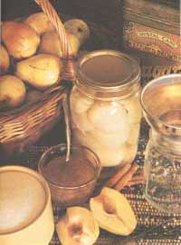
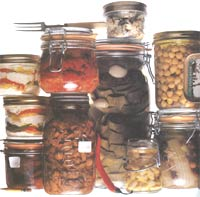
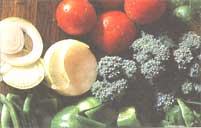
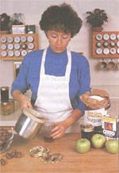
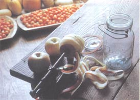

The Abcs Of Canning
How to can food throughout the year, including choosing jars, hot pack versus cold pack, techniques.
By Jackie Clay
August/September 1992
KING HARVEST
There's nothing like having a well-stocked pantry of convenient and nutritious "fast foods."
How to Home Can Your Food Year-Round
To many people, canning sounds like too huge an undertaking to try alone. How could it not with all the warnings going around about food poisoning, spoilage, exploding pressure canners, and malfunctioning pressure gauges? Still, I'm often surprised how few new-to-the-land people are willing to give it a go. It's a shame - not only do they miss out on a well-stocked pantry of convenient and nutritious "fast foods," but they also miss out on the sheer joy of preserving their garden bounty. That's what canning is all about.
Also, many folks think that you only can food through one season, but let me assure you - canning is a year-round money-saver. It starts up in the spring with the first-crop abundance, and moves through autumn's garden harvest (a bit or truck-load at a time), and then through the hunting season with venison, steer, and poultry. Winter is much busier than you'd ever imagine between processing your stored produce (which may show signs of beginning to soften about now) and canning your own "convenience meals."
Another worry which stops people from canning is that they won't have enough of any one item to fill a canner - but don't let that stop you. Simply figure what else you have that requires the same amount of time in the canner, and add that in, too. It doesn't even have to be canned in the same size jars.
Remember, this food is for you; there are no laws about what you can or cannot mix together. So for example, if you are canning tomatoes in quarts that take 60 minutes, just figure out another vegetable that takes the same time and amount of pressure. (Helpful hint: most pressure canned products have the same ten pound pressure requirement. Fruit, the only exception to this rule, is usually canned in a water bath, anyway).
Choosing Your Canning Jars
Before you start the actual canning process, think jars. Believe me, being cautious early on can save you a heck of a lot of frustration later. Now, most people use mason jars, but I can tell you, I have been canning for thirty-some years, and I regularly use mayonnaise jars and other commercially bottled jars with no problem. They're often pint- or quart-sized, which is just the size that most recipes refer to. I just try to make sure the jars have the right threads for canning jar lids and rings.
Whatever kind of jar you use, take the time to check each one for any cracks, and examine each rim for tiny chips. Using a cracked jar will almost always lead to a broken jar in your canner, and even the smallest chip can cause a failed seal, which can make for spoiled food. So throw those unsound jars right into the recycling bin. It is also a good idea to put hot foods into hot jars in order to keep sound jars from breaking. Keep the jars from touching anything cold, and only put boiling hot food jars into the boiling water bath. In canning, hot + cold = a broken jar.
A good way to collect low-cost jars is to put a few ads up here and there. You'll be surprised at the response. Not only will you find jars, but sometimes you can find a good canner. If you're lucky, you may find an "old-time" canner who is willing to share his knowledge and experience with you.
Hot Pack vs. Cold Pack (Raw Packing)
In order to cold pack, raw food is put into the jar, cut into convenient chunks (if necessary), and boiling liquid is poured in. It's important to leave the proper amount of head space (see chart or your own canning book). With hot packing, however, the food is partially or wholly pre-cooked and then put into jars while it's boiling hot. This makes a more solidly packed jar. Both ways are equally safe and produce pretty much the same taste. If I am in a hurry, I use the raw pack since it's quicker and I can get more done. However, because raw packed food is less dense, I do use more jars that way, and when they're filled up, they don't hold as much solid food as hot packing. So if I have more time or I am short of jars, I opt for hot packing.
One "hybrid" is raw packing chunks of meat (roast, steaks, etc.). The cold meat is placed in the jars. Then the open jars are placed in a slow boil bath until the meat is heated up to 170° F. This draws the liquid from the meat, and helps ensure that it processes well. Add salt if desired, cleanse the rims, seal the jars, and then place them into the pressure canner.
Different Types of Canning
There are two basic forms of home canning: Pressure canning, which is exactly what it sounds like - canning jars of meat or produce under pressure - and the boiling water bath, most often used for tomato products and fruits (because they are acid and can be safely processed at boiling temperature).
THE BOILING WATER BATH
The boiling water bath method is about as easy as boiling water, itself. The best thing about the boiling water bath method is that there's very little danger to speak of. And there's no need to buy an expensive canner. My grandmother canned for years on the same large copper boiler that she used to boil clothes on wash day.
You can even use a plain old large kettle or metal bucket. However, there are a few prerequisites: it must be deep enough to submerge your jars in water (at a strong, rolling boil) by at least one inch. It needs some sort of rack to hold the jars off the bottom of the container and to allow the water to circulate freely. And you need a snug-fitting lid to keep the temperature consistent inside the canner.
Use the boiling water bath method only when it comes to canning high-acid foods. Among these are: orange juice, grapefruit juice, all berries, peaches, pickles, tomatoes (although there are a few new types of low-acid tomatoes which should be pressure canned), and pickled vegetables.
Don't make the mistake of canning low-acid foods (which most vegetables are) in a boiling water bath - you're just asking for a case of botulism. Here's why: The water temperature won't heat beyond the boiling point with this method, which is necessary to destrol harmful bacteria.
The first step is to fill your canner with enough water to cover your jars; then add an extra inch of water to allow for a rolling boil. Then put the heat on, pack the food you're canning into hot, sterilized jars, and place the jars into the boiling water bath. (Again, when you do this, make sure your jars are boiling hot or they will crack.) You're now ready to load up your canner with the jars. Make sure that none of the jars are touching each other, and then cover the canner and watch it until it comes to a full boil (not just a simmering boil). Only then should you begin your time count. From time to time, peek in and make sure everything is going all right. Then, at the end of the processing time, remove the canner from the heat, and take out the jars one at a time. Use a jar lifter to do this, and place them gently on a dry, folded towel in a draft-free place. Do not attempt to tighten the seemingly-loose rings - it may cause the seal to fail.
As you can see, there's not much to this method of canning, and you can store high-acid fruit for 12 to 18 months. Those beautiful rows of red tomatoes, yellow peaches, and sparkling fruit cocktail sure do make a short day's canning worthwhile. Just wait until your family eats all that pretty fruit. It's a whole different taste from that bland, over-sweetened, tinny fruit from store shelves! (I won't even go near store-bought peaches - those hard, tasteless, syrupy lumps.)
PRESSURE CANNING
It's no wonder people fear pressure canning with all the circulating horror stories about canners blowing up! But the truth is, anyone who can boil water (and has half a lick of sense) can do it with no problem. Although there are a few different kinds of pressure canners, they all pretty much work the same. These canners are the best way to can low-acid foods such as stews, soups (not tomato), spaghetti, and almost all vegetables.
The canners are heavy-duty cookers with a steam-tight cover, a safety and exhaust port, and a rack to hold the jars off the bottom. Of course there's also the pressure gauge, which is what people fear most. With normal care and a once-a-year check up (often free or low cost) from your county extension office, the pressure gauge is quite safe and almost always works just fine. So relax and get to work.
First, sterilize your jars and lids in boiling water. Check jars for spoilage, before use. Most authorities advise boiling 10 minutes before tasting canned food, just to be safe. (I haven't poisoned anyone in 30 years of heavy-duty canning!) While you're doing this, you should prepare the food you'll be canning so it's ready to go. Place the rack in the bottom of the canner, and add boiling water, filling to two inches for large canners. Small ones only need one inch of water, but are less economical than the larger canners.
You're ready to load. Fill each jar with food, being sure to tighten the rim onto the lid of each jar, and set them one by one into your canner. You've got to make sure the jars cool off, or the whole batch could process improperly and lead to spoiling. Set the lid on top of the canner and fasten it securely. (If your canner has individual fasteners, screw them on tightly.)
Exhaust the steam with the petcock open for 10 minutes. Then wait to shut the petcock or the weight on, until the steam exhausts in a steady stream, not in unsteady bursts. Process at the proper pressure for the required length of time (see "Timetable for Pressure-Canning Vegetables").
When the time is up, shut off the heat, or carefully remove the canner from the heat. Let the canner sit until the pressure reads zero for a few minutes.
Okay, you're ready to take them out. Open the petcock gradually and allow any remaining steam to escape. Watch your fingers - steam can quickly burn! When no more steam escapes, loosen the cover and remove it. Take out your jars carefully with a jar-lifter, and set them on a dry, folded towel, in a draft-free area to cool. Do not try to tighten the now-seemingly loose rings! (This could cause the seal to release.) Nor should you cover the jars - they need to be exposed to normal room temperature while they are cooling in order to seal.
Don't get upset if a jar doesn't seal
- accept that fact and just go on.
Once your jars have cooled, check to be sure they have all sealed. You can do this by making sure each jar has a slight dip in the lid's center and "rings" when tapped lightly with your finger. If there is any give, it means the jar is not sealed, and you should refrigerate and use the food as soon as possible. But don't get upset if a jar doesn't seal - accept that fact and go on. It's a good idea to check that jar though, as sometimes a slight nick in the rim has escaped your watchful eyes. You don't want to reuse a defective jar again.
Also, be sure to remove the rings only when the jars have completely cooled. Don't worry, it won't affect the seal on a correctly sealed jar, nor will moving them or washing the jars carefully. Place them on a shelf in a cool, dark place to store. You can keep low-acid foods in storage for between two to five years. How proud you'll feel looking back on those full shelves - the result of a good day's canning. And see, the canner didn't blow up after all.
Some Last Helpful Hints
To make sure your sealer is properly adjusted, put a little water in a can, seal it, and place it in boiling water for a few seconds. If you see air bubbles around the can, the seam isn't tight.
Never use a lid that is not a home-canning lid. The three most common brands are Kerr, Mason, and Ball.
Never recycle lids for canning. It is a dangerous (though common) cause of a failed seal, no matter how carefully they were removed. Before placing them on a jar, always boil them, and keep them in that water until use. This sterilizes them and softens the rubber, for a better seal.
Choose only fresh, firm produce to can. If it's moldy or soft, you better toss it to the chickens or pigs!
Don't over-fill jars, as it will affect the quality of the seal. Fruits and most vegestables may be packed within 1/2" of the top. However, some veggies - corn, beans, and peas - tend to swell, and they will need a full inch of headroom. Meat also needs at least an inch - raw packed meat, even more.
The top of the jar needs to be wiped clean. Pulp, grease, bits of vegetable, etc., have a way of sticking to the rim when you're filling. Even a tiny bit can cause a failed seal.
REFERENCES:
Complete Guide to Home Canning, Preserving and Freezing (Dover Publications Inc., 180 Varick Street, New York, New York 10014).
Kerr Home Canning Book (Kerr Glass Manufacturing Corporation, Consumer Products Divisions, P.O. Box 76961, Los Angeles, California 90076).
Safe Directions for Home Canning Fruits and Tomatoes (UC Farm and Garden Publications 1992, University of California, ANR Publications, 6701 San Pablo Avenue, Oakland, California 94608-1239).
Still apprehensive about the canning? Start out with the easiest of the easy!
The hot jar lid is placed on the clean jar rim, and the ring (which must be clean and not rusted through) should be screwed down firmly by hand. Don't over-do the tightening, as it may break the jar. The sealing is done in the canner, not by hand. Still apprehensive about home-canning? How about starting off with the easiest of the easy - the hot water bath and some fruit and tomatoes. Then move on to some easy pressure canned vegetables such as carrots, mushrooms, rutabagas, and tomato sauces. After a successful run with those "easy" friends, try a few jars of corn, spaghetti sauce with meat, pizza sauce, and chili. What makes these "less easy"? Not much. The processing time may be longer, or they may have a bit of oil, grease, or debris that tends to get on the rim which causes the seal to fail.
The more fussy products to can have a bad name, but undeservedly do. Meat, fish, poultry, and baked beans only need a little extra care. Just be sure there's not much fat when your canning them, and watch the cleanliness of your jar rims before sealing. Then, it's just a matter of keeping the pressure even during the processing.
I have canned all the "hard" to can products and have had few failures. In a typical year, I can at least two deer, most of a steer or elk, fifty or so chickens, smoked salmon, trout and many mixed bean jars - chili, baked beans, frijoles, etc. I live simply (with no electricity) and must can all my meat. Even if I didn't have to, I would - the food is so much better (no freezer burn!) and the cost is nil. Canning on a wood range eliminates any power cost, and I've never paid more than a dollar a dozen for jars (found at rummage sales, auctions, and flea markets, to name just a few places). As you can and store, those jars have a wonderful way of building up in the pantry. Six or eight jars doesn't seem like much, but six times six - eight times eight - pretty soon, the pantry fills. We keep a huge stock of canned goods to safeguard against hard times. And it's lucky we do. This past winter, a neighbor was laid off from his job with no warning. His family shared our bounty, and we were thrilled to give it. This year, his wife wants to begin canning. A "lost" art is being revived.
Editor's note: Jackie Clay is a freelance writer and an "old back- to-the-lander" who has been canning for over 30 years. You can be sure her pantry is always filled.
 Mix 'n Match Remember, this food is for you; there are no laws about what you can or cannot mix together. |
 Where do I put this stuff?: Before you start the actual canning process, think jars! |
 Sterilize: Pack the food you're canning into hot, sterilized jars before placing them in the boiling water bath. |
|
 Fruit Bath: The boiling water bath is the best method of canning low-acid foods,such as fruit. |
 |
 |
 |
|
|